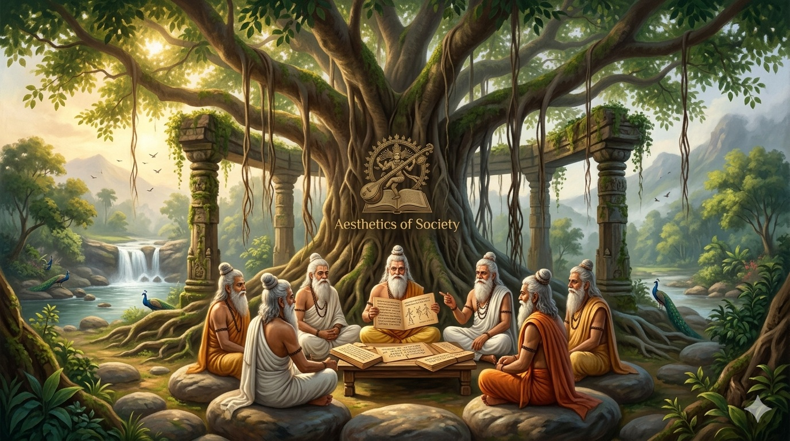

Exploring the ancient wisdom of Natya Shastra through the lens of neuroscience, cosmic energy, and human consciousness. This work bridges classical knowledge with modern understanding.
About the Author